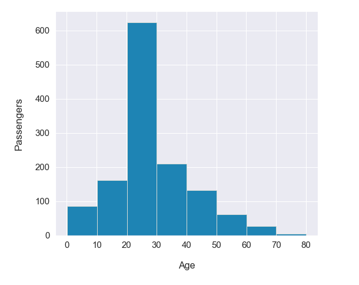

Exploring Survival on the Titanic

RMS Titanic was a British passenger liner operated by the White Star Line that sank in the North Atlantic Ocean in the early morning hours of 15 April 1912, after striking an iceberg during her maiden voyage from Southampton to New York City.Of the estimated 2,224 passengers and crew aboard, more than 1,500 died. By examining factors such as class, sex, and age, in our dataset we will experiment with different machine learning algorithms and build a program that can predict whether a given passenger would have survived this disaster. To get sense of the variables, their class type, and the first few observations of each. We know we’re working with 1309 observations of 14 variables. To make things a bit more explicit since a couple of the variable names aren’t 100% illuminating, here’s what we’ve got to deal with:
Dataset overview and Missing Values The chart gives us a sense the variables, and informs us of the missing observations in each column.We see that Age, Cabin, Fare and Embarked columns have missing values which we will impute in the course of Data pre-processing.

Survival Visualization of Passengers The calculation shows that only 38% of the passengers survived. Not the best odds. The reason for this massive loss of life is that the Titanic was only carrying 20 lifeboats, which was not nearly enough for the 1,317 passengers and 885 crew members aboard.
Age Demographics of Passengers The chart displays the number of passengers travelling aboard Titanic categorized based on the age group. 40% of the passengers were in age group of 20-30.
Visualizing Survival by Age Group Here we can see that children were indeed the most likely age group to survive, although this percentage was still tragically below 60%.

Visualizing Gender Survival While the Titanic was sinking, the officers famously prioritized who was allowed in a lifeboat with the strict maritime tradition of evacuating women and children first. Our statistical results clearly reflect the first part of this policy as, across all classes, women were much more likely to survive than the men.
Visualizing Passenger Class Survival Here we see clearly, that Pclass is contributing to a persons chance of survival, especially if this person is in class 1. We will create another pclass plot below.
Feature Engineering Title We broke passenger Name down into additional meaningful variables which can feed predictions. Passenger title is contained within the passenger name variable categorize passengers through the titles in the name and drew relation with survival

Feature Engineering Family Size SibSp and Parch would make more sense as a combined feature, that shows the total number of relatives, a person has on the Titanic. We created a 'relative' column and also added a feature that shows if someone is not alone.

Imputing Missing Value in Fare Column The visualization shows that the fare would be somewhere greater than 7 and less than 10, this adds another filter to calculate mean. post appling all three filters we get the mean of $ 8.03. Which will be replaced by nan value in Mr.Storey's fare!

Imputing Missing Value in Embarkment Column The median fare for a first class passenger departing from Charbourg (‘C’) coincides nicely with the $80 paid by our embarkment-deficient passengers. I think we can safely replace the NA values with ‘C’.

Extra Tree Classifier for Feature Selection It allows for identification of the most important or influencing factors on the response (or dependent) variable.

Visualizing Data Distribution The density plot shows how the data is distributed for each variable in the dataset. The data is not evenly distributed and hence we used Scalar method for scaling the dataset.

2. Logistic Regression After cleaning the data (replacing missing values with the mean or mode) , we created a new feature called ‘Title’ which was extracted from ‘Name’ column. We encoded columns like ‘Sex’ ,’Title’, ’Port of embarkment’ to be used by the Machine Learning model. We then dropped unwanted columns from the dataframe that will not be used by the model. We selected 7 columns/features: pclass (class of the passenger) ,survived, sex, age, sibsp(siblings-spouse relationship) ,parch(Parent-Child relationship) ,title. We then split the dataset in to training and testing datasets and created a Logistic Regression model to be run on the dataset. The accuracy of the model was 84%.
3. RandomForestClassifier Started with visualizing the dataset for its variables, missing values and its datatypes. Leading to imputing the missing values and feature engineering new columns from the existing one as described in the charts above. Post dropping those columns we do not need, converting the data into categorise to prepare them for analysing by using label encoder. After dividing the dataset into X and y 'ExtraTreesClassifier' was used to select best features leading it to scale the X axis as y is already binary.We go onto split the train-test dataset and fit it to the model. The accuracy of the model was 79.26%